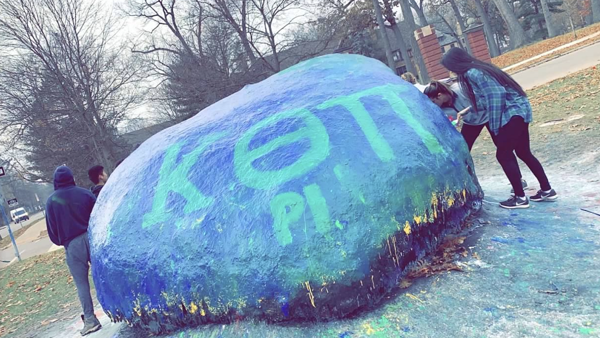

Zeta Tau Alpha
Vice President of Finance
- Manage budget of $900,000 and consult with auditors and financial advisors to keep the chapter in good financial standing.
- Responsible for facilitating budget revisions and analyzing data from previous years to construct the annual spring budget.
- Due to COVID-19 pandemic, calculated refunds for members and reconstructed the budget to fit the affected status of the chapter and employees on our payroll.

Kappa Theta Pi
Chapter Member
- Interact in professional development activities such as company networking and interview workshops.
- Analyze the progress of the fraternity and built a web scraper to increase the efficiency of calculating participation.
- Participate in the design team working on developing a KTP web application and user experience skills.